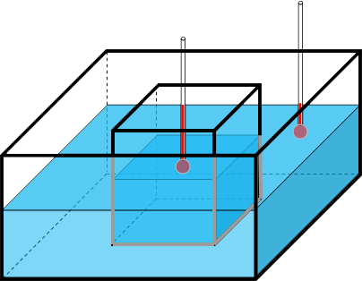

The change of thermal energy, or heat, Q in an object when its temperature increases from T1 to T2 is
Q=ρVc(T2-T1)
where ρ is the density, V is the volume (the area in the case of a two-dimensional model), and c is the specific heat.
Imagine an object is placed into a completely insulated box (see the image below). The initial temperatures of the object and the box may be different.
The box will either warm up or cool down through the diffusion of thermal energy. The direction of
heat diffusion depends on the difference of the initial temperatures. Two physical laws dictate that the following things must happen:
- The First Law of Thermodynamics (i.e., the Law of Conservation of Energy):
Regardless of which way the heat diffuses, the total energy of the system
must stay the same as no thermal energy is lost or gain in the completely insulated system.
- The Second Law of Thermodynamics: Regardless of which way the heat diffuses, the temperature inside the
system must finally become the same everywhere in the insolated system.

The thermal energy that flows into or out of the environment in the box is:
Qenv=ρenvVenvcenv(Tfinal-Tenv)
The thermal energy that out of or into the object is:
Qobj=ρobjVobjcobj(Tfinal-Tobj)
The Law of Conservation of Energy requires that Qenv+Qobj=0.
This allows us to determine that the final temperature must be:
Tfinal=
(ρenvVenvcenvTenv+ρobjVobjcobjTobj)/
(ρenvVenvcenv+ρobjVobjcobj)
Computer modeling provides opportunities of virtual experimentation,
which could make the understanding of the above concepts more concrete.
The model below presents a dynamic view of how heat transfer actually happens between
the test piece and the environment, as opposed to just providing a value of final temperature.
In the model, there are two thermometers for monitoring the temperatures inside
and outside the test piece. While the model is running, you can turn a graph on to view the temperatures
recorded by the thermometers. The following things can be explored with this model (remember to reset the simulation
using the "Reset" button before you change the model):
- Change the initial temperatures:
Use the radio buttons below the model to change the initial temperatures
of the test piece and the environment and re-run the simulation to watch the changes of the temperatures the thermometers record.
- Change the size of the test piece:
Click on the test piece, resize it, and re-run the simulation to see how the final temperature changes.
- Change the specific heat:
Use the "Specific heat" drop-down menu to change the specific heat of the test piece
and re-run the simulation to see how the final temperature changes.
- More realistic simulations:
A 2D model simulates a cross section of a 3D system. In reality, the cross section also loses or gains energy from
the perpendicular direction (we call z-direction). To make our simulation more realistic, you can choose to allow
heat loss in the z-direction. When this is on, the entire model will gradually lose energy, simulating what happens in reality.